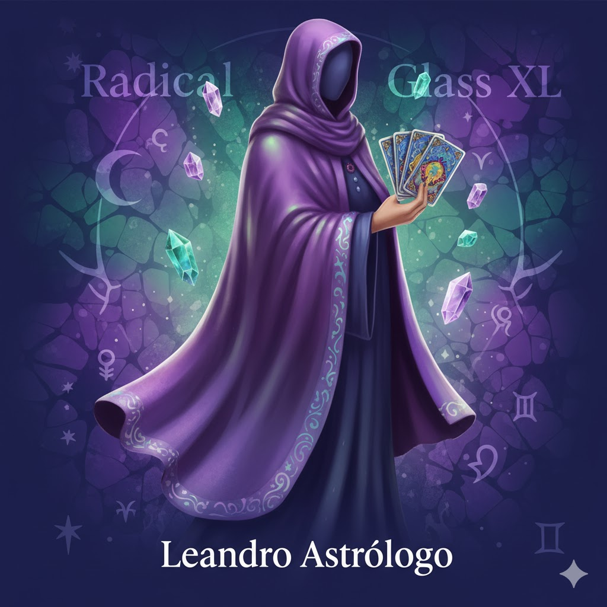

Escolha 3 cartas para revelar sua leitura
Toque ou clique nas cartas para selecionar. Ao escolher 3, revelaremos sua interpretação.

Leitura do Baralho Cigano — Astrólogo Leandro
Toque ou clique nas cartas para selecionar. Ao escolher 3, revelaremos sua interpretação.